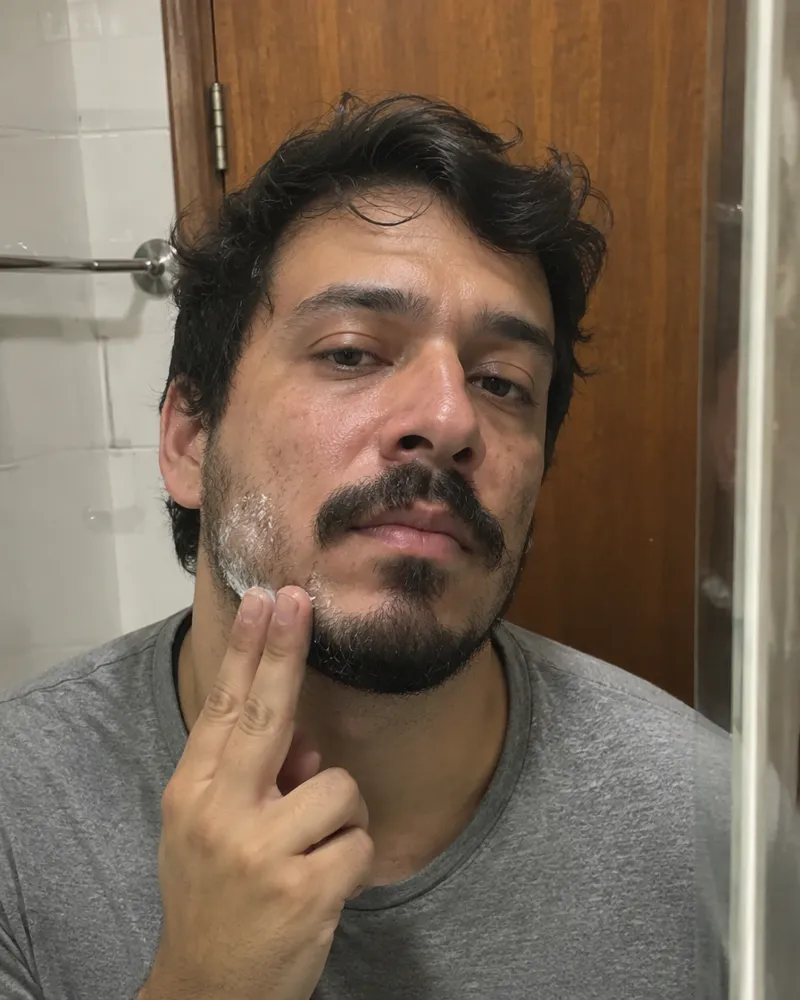

AntesDepois
AntesDepois9 MESES DE TRATAMENTO
“Ao fazer o tratamento, desisti de fazer o implante. Foram 9 meses de tratamento e obtive um ótimo resultado.”
Antonio, 30 anosAvaliação médica online, fórmula manipulada e kit de 4 meses em casa.

Entradas e coroa costumam avançar aos poucos. Veja a diferença entre esperar e começar agora.
Começar minha avaliaçãoResultados variam de pessoa para pessoa. Tratamento sempre a critério médico.
Começar minha avaliaçãoOs resultados são individuais e podem variar de pessoa para pessoa.
Você responde um questionário de saúde em menos de 5 minutos, sem sair de casa.
Cabelo não cresce da noite para o dia. Veja o caminho real.
O fio cresce sem parar, nutrido pelos vasos na base do folículo. Cerca de 85% a 90% dos seus fios estão nesta fase agora.
Por isso o resultado aparece entre o 3º e o 4º mês: o tratamento age no próximo ciclo do fio.
E NO SEU TRATAMENTONada visível ainda, e tudo bem. O tratamento já age por dentro. Pode haver uma queda temporária: é o ciclo do fio se reorganizando.
O hormônio DHT afina os fios até eles pararem de crescer. Enquanto o folículo está vivo, dá para frear o processo.
 01O DHT agee afina seus fios
01O DHT agee afina seus fios 02O folículo enfraquecemas ainda está vivo
02O folículo enfraquecemas ainda está vivo 03O tratamento bloqueiae os fios podem voltar
03O tratamento bloqueiae os fios podem voltarQuanto mais cedo, mais folículos podem ser salvos.
Em um estudo com 450 homens, 94% dos que combinaram bloqueador de DHT e minoxidil tiveram melhora da queda em 12 meses. Com um remédio só, o resultado caiu para 81% e 59%.
Por isso o kit da Elevamed é um protocolo, não um remédio isolado. O médico combina os ativos certos para o seu caso.
Quero o protocolo completo* No estudo, o bloqueador avaliado foi a finasterida. O Protocolo Elevamed segue a mesma combinação estudada, bloqueador + minoxidil. Fonte: Hu R. et al. Combined treatment with oral finasteride and topical minoxidil in male androgenetic alopecia: a randomized and comparative study in Chinese patients. Dermatologic Therapy, 2015. 450 homens, 12 meses. Resultados variam de pessoa para pessoa. Tratamento sempre a critério médico.
 4º mês grátis
4º mês grátis
Minoxidil em creme, aplicado direto nas falhas da barba, num protocolo de 4 meses definido por médico. A avaliação é própria para barba.
Conhecer o tratamento para barbaCada organismo responde de um jeito. Em geral, o resultado aparece entre o 3º e o 4º mês, por isso o kit tem 4 meses. Os resultados variam e dependem de constância, sempre com acompanhamento médico.
Você responde um questionário e envia fotos. Um médico analisa e, se for o caso, prescreve. Tudo online, sem videochamada, a critério médico.
Cada caso é avaliado individualmente antes de qualquer prescrição, e a medicação vem de farmácias que seguem as normas da Anvisa.
Só depois da aprovação médica. Ao fim do questionário você cadastra o cartão, e a cobrança acontece apenas se o médico indicar o tratamento.
Sim, antes do envio. Como a fórmula é manipulada para você, o cancelamento precisa acontecer antes de o pedido sair. Avisamos quando o envio estiver próximo.
Sim. A caixa não identifica o conteúdo nem a marca por fora.
A equipe acompanha sua evolução. Sem resultado, o médico pode ajustar a fórmula ou indicar outra abordagem.
A Elevamed não é uma farmácia. Quando prescritos, os medicamentos são manipulados por farmácias credenciadas, de acordo com as normas da Anvisa, e prescritos por médicos independentes.
Conheça as farmácias credenciadas →A avaliação leva cerca de 5 minutos.
Começar minha avaliação

 Segurança e transparência em primeiro lugar
Segurança e transparência em primeiro lugar